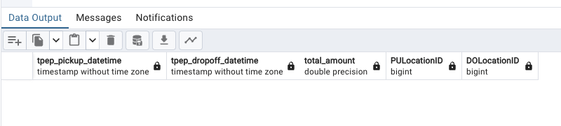
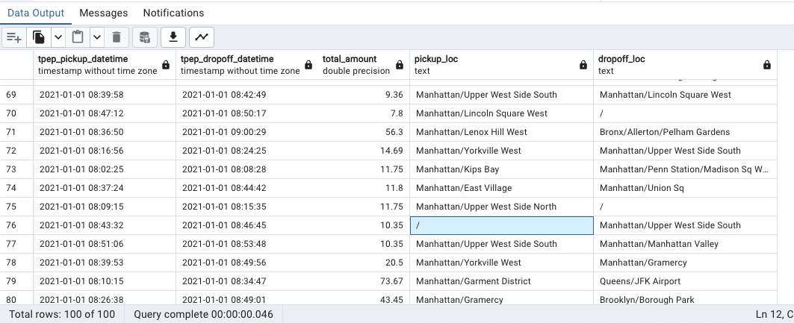

SQL
Terminology
SQL: means Structured Query Language. SQL is a standard language for database creation and manipulation.
Useful links
- SQL joins: link
What is SQL?
So, SQL is a standard language for database creation and manipulation. This part of the lecture is to remember how SQL works. We are gonna use the yellow_taxi_trips data we have in pgAdmin and also we are gonna use this zone data.
So basically we have this tables to work with:
yellow_taxi_trips: list of all yelow taxi trips of NYC for January 2021.zones: list of zone IDs for pick ups and drop offs.
So lets say we want to:
1) Question 1
- Selects all rows in the
yellow_taxi_tripstable. If there are more than 100 rows, select only the first 100. We would do:
SELECT
*
FROM
yellow_taxi_trips t,
zones zpu,
zones zdo
WHERE
t."PULocationID" = zpu."LocationID" AND
t."DOLocationID" = zdo."LocationID"
LIMIT 100;A few notes on this:
- We select all rows in the trips table. If there are more than 100 rows, select only the first 100.
- We give aliases to the trips and zones tables for easier access.
- We replace the IDs inside PULocationID and DOLocationID with the actual zone IDs for pick ups and drop offs.
- We use double quotes (““) for the column names because in Postgres we need to use them if the column names contains capital letters.
2) Question 2
- We only want the pickup time, the dop off time, how much the drive was, and the zones. For this we would do:
SELECT
tpep_pickup_datetime,
tpep_dropoff_datetime,
total_amount,
CONCAT(zpu."Borough", '/', zpu."Zone") AS "pickup_loc",
CONCAT(zdo."Borough", '/', zdo."Zone") AS "dropoff_loc"
FROM
yellow_taxi_trips t JOIN zones zpu
ON t."PULocationID" = zpu."LocationID"
JOIN zones zdo
ON t."DOLocationID" = zdo."LocationID"
LIMIT 100;3) Question 3
- We wanna see if there is a NULL in the pickup zone:
SELECT
tpep_pickup_datetime,
tpep_dropoff_datetime,
total_amount,
"PULocationID",
"DOLocationID"
FROM
yellow_taxi_trips t
WHERE
"PULocationID" is NULL
LIMIT 100;4) Question 4
- Cheking for Location ID’s in the
zonestable not in theyellow_taxi_trips:
SELECT
tpep_pickup_datetime,
tpep_dropoff_datetime,
total_amount,
"PULocationID",
"DOLocationID"
FROM
yellow_taxi_trips t
WHERE
"DOLocationID" NOT IN (
SELECT "LocationID" FROM zones
)
LIMIT 100;
But what if we delete, for example, all the rows in the table zones with LocationID of 142. First, we delete them with:
DELETE FROM
zones
WHERE
"LocationID" = 142;and now if we run again:
SELECT
tpep_pickup_datetime,
tpep_dropoff_datetime,
total_amount,
"PULocationID",
"DOLocationID"
FROM
yellow_taxi_trips t
WHERE
"DOLocationID" NOT IN (
SELECT "LocationID" FROM zones
)
LIMIT 100;we will get a list of rows with PULocationID of 142:

So, because this is a more real scenario (where some data is missing), is also more convenient to do a left join to get the pickup time, the dop off time, how much the drive was, and the zones. For this we would do:
SELECT
tpep_pickup_datetime,
tpep_dropoff_datetime,
total_amount,
CONCAT(zpu."Borough", '/', zpu."Zone") AS "pickup_loc",
CONCAT(zdo."Borough", '/', zdo."Zone") AS "dropoff_loc"
FROM
yellow_taxi_trips t LEFT JOIN zones zpu
ON t."PULocationID" = zpu."LocationID"
LEFT JOIN zones zdo
ON t."DOLocationID" = zdo."LocationID"
LIMIT 100;Look at what we get if we run this query:

we can see that we get a / where we don’t know the location.
5) Question 5
- Counts the amount of records in the
yellow_taxi_tripstable grouped by day.
SELECT
CAST(tpep_pickup_datetime AS DATE) as "day",
COUNT(1)
FROM
yellow_taxi_trips t
GROUP BY
CAST(tpep_pickup_datetime AS DATE)
ORDER BY "day" ASC;6) Question 6
- Counts the amount of records in the
yellow_taxi_tripstable grouped by day, ordered by counts, and display displays them in descending order, so that the day with the highest amount of trips is shown first. Also show the maximum amount that a driver earned in a trip for that day and the maximum passenger count on a single trip for that day.
SELECT
CAST(tpep_pickup_datetime AS DATE) as "day",
COUNT(1) as "count",
MAX(total_amount) as "max_amount",
MAX(passenger_count) as "max_passenger"
FROM
yellow_taxi_trips t
GROUP BY
CAST(tpep_pickup_datetime AS DATE)
ORDER BY "count" DESC;7) Question 7
- Counts the amount of records in the
yellow_taxi_tripstable grouped by day AND location ID, ordered by day and location id, and displays them in ASCENDING order. Also show the maximum amount that a driver earned in a trip for that day and the maximum passenger count on a single trip for that day.
SELECT
CAST(tpep_pickup_datetime AS DATE) as "day",
"DOLocationID",
COUNT(1) as "count",
MAX(total_amount) as "max_amount",
MAX(passenger_count) as "max_passenger"
FROM
yellow_taxi_trips t
GROUP BY
1, 2
ORDER BY
"day" ASC,
"DOLocationID" ASC;